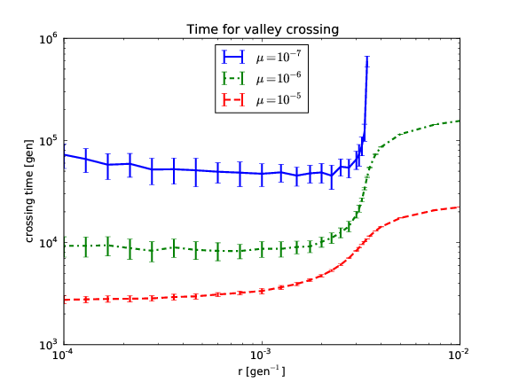

Now, something slightly more advanced. If sign epistasis is at work in a certain populaiton, the fitness landscape will include valleys. Those valleys need to be crossed by some individual carrying multiple mutations in order to reach the fitness maximum. Recombination can accelerate this process as a source of genetic diversity (in addition to random mutation). This works up to a certain point, where recombination becomes so frequent that it actually destroys beneficial combinations of mutations more often than it creates them. This phenomenon is simulated in this example, which can be found integrally in valley.py.
First, we load the usual modules, and we set the population parameters:
L = 4 # Number of loci
N = 1e10 # Population size
s1 = 1e-5 # Fitness of wildtype
s2 = 0.01 # Fitness of quadruple mutant
Then, we decide what recombination and mutation rates to explore:
rs = np.logspace(-4,-3,10).tolist() + \
[0.00125, 0.0015, 0.00175, 0.002,
0.00225, 0.0025, 0.00275, 0.003,
0.0031, 0.0032, 0.0033, 0.0034,
0.0035, 0.00375, 0.004, 0.005,
0.0075, 0.01]
mutation_rates=[1e-7,1e-6, 1e-5]
We then repeat the simulation for various mutation and recombination rates:
for k, mu in enumerate(mutation_rates):
[...]
for i, r in enumerate(rs):
[...]
c = h.haploid_lowd(L) # produce population with L loci
c.set_genotypes([0],[N]) # initialize with N individuals in genotype 0 (wildtype)
c.set_recombination_rates(r) # set the recombination rate
c.set_mutation_rates(mu)
#set the wildtype fitness to s1 and the quadruple mutant fitness to s1+s2 (all other genotype have relative fitness 0)
c.set_fitness_function([0b0, 0b1111], [s1, s1+s2])
# cross valley: evolve for gens generations at a time until quadruple mutant is at frequency >1/2
gens = 100
while c.get_genotype_frequency(0b1111)<0.5 and c.generation<1e6:
c.evolve(gens)
Finally, we plot all lines with error bars:
ax.errorbar(rs, times, dtimes,
c=colors[k],
lw=2,
label=r'$\mu=10^{'+str(int(np.log10(mu)))+'}$')
We obtain the following plot (note that the calculation takes a while):
